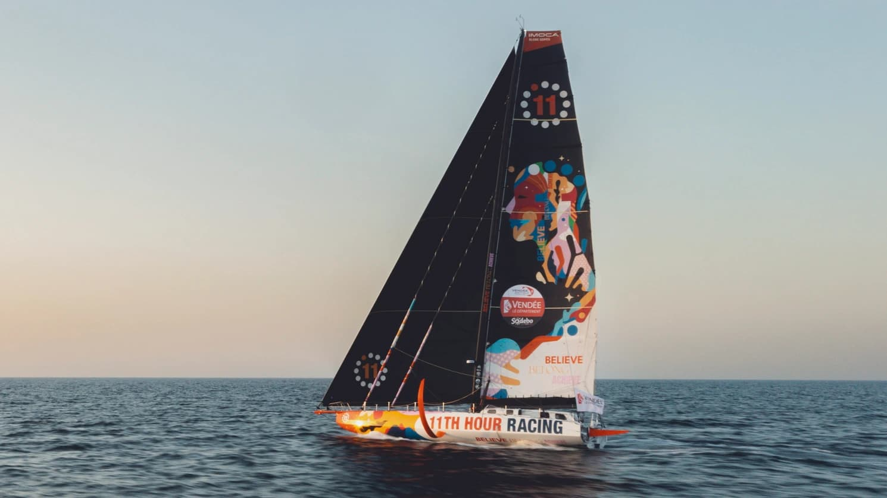
Mission
We believe a healthy ocean is essential to a healthy future. That's why, since 2010, we're racing at the 11th hour to inspire action and accelerate solutions that restore ocean health and strengthen coastal communities.
11th Hour Racing: Press Kit
Welcome to 11th Hour Racing's Press Kit. Here you'll learn our approach, access media assets, and find everything you need to help tell the story of racing toward a healthier ocean.

We believe a healthy ocean is essential to a healthy future. That's why, since 2010, we're racing at the 11th hour to inspire action and accelerate solutions that restore ocean health and strengthen coastal communities.
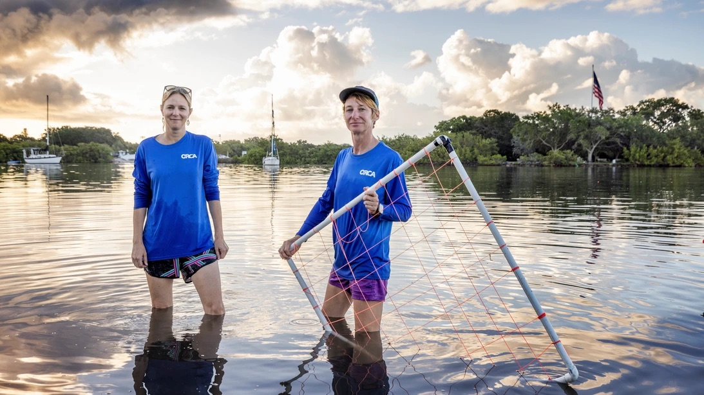
Our impact is rooted in a simple belief — support, connect, and empower the people and organizations leading real change for ocean health. We do this through sponsorships, grantmaking, and our ambassador network.
11th Hour Racing harnesses the power of sport, storytelling, strategic collaborations, and innovation to turn ideas into action. By supporting the people and organizations leading change, we focus our efforts on four interconnected areas where we believe we can make the greatest impact.
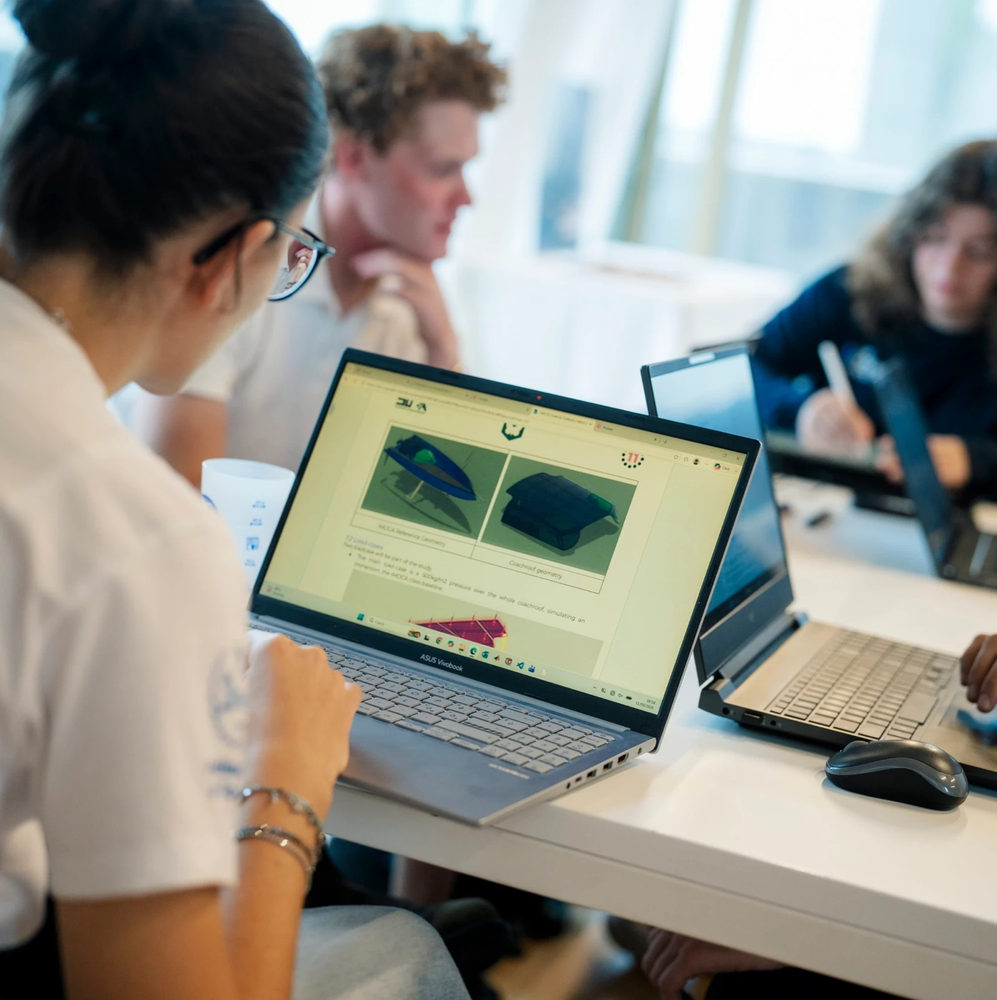
We help develop and scale the tools, technologies, and programs that enable a more sustainable maritime industry.
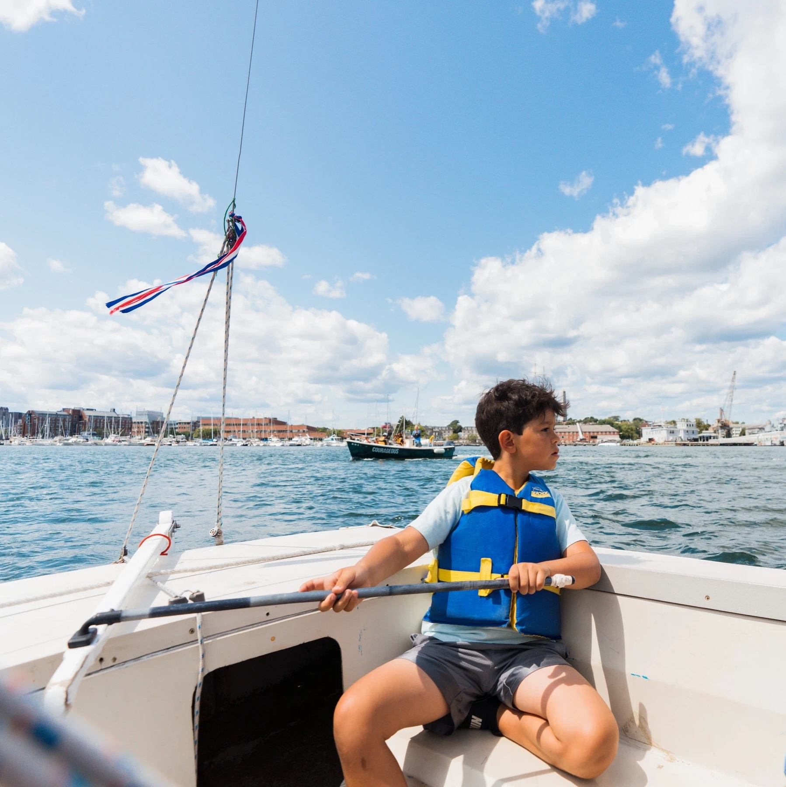
We help expand access to sailing and maritime professions while fostering a more diverse, inclusive, and representative marine industry.
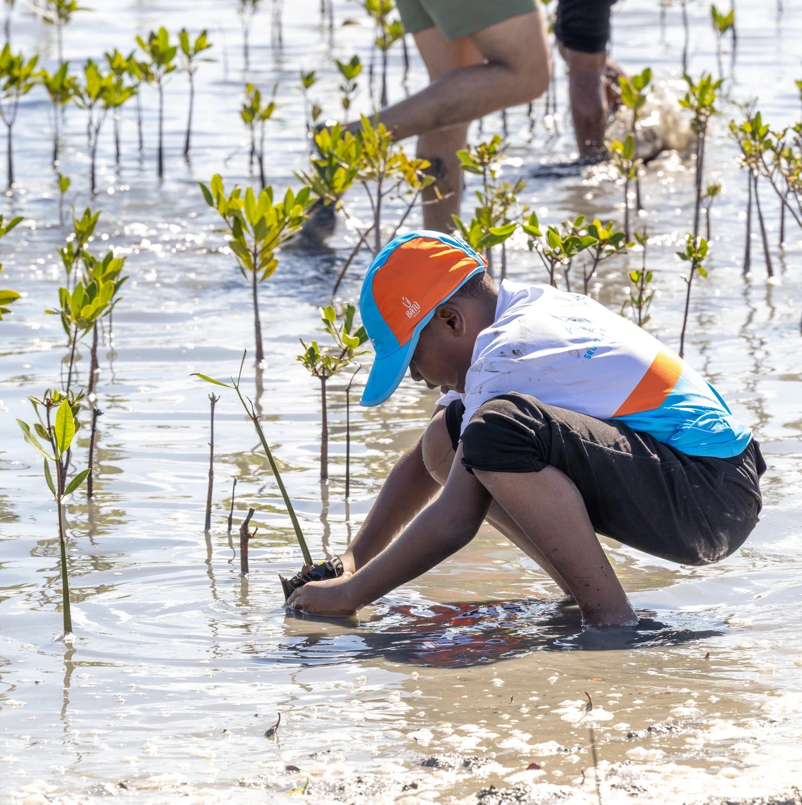
We support community organizations, scientists, and local stewards working to restore and protect coastal and marine ecosystems.
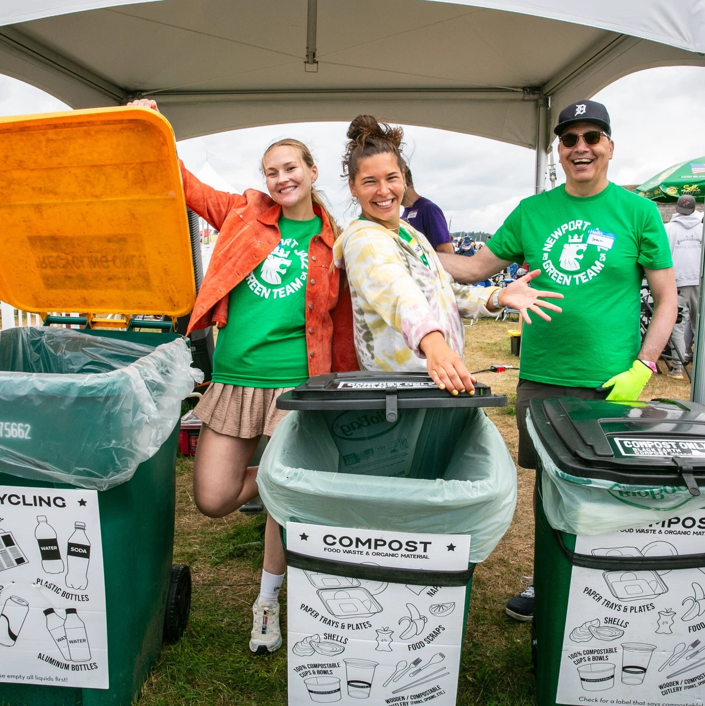
We work with community organizations, event organizers, and local changemakers to make sustainability visible, accessible, and actionable.
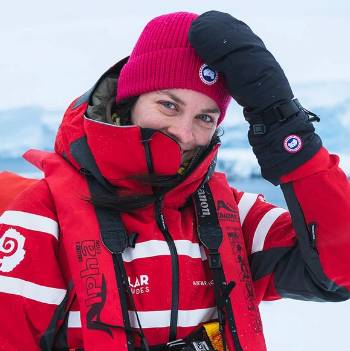
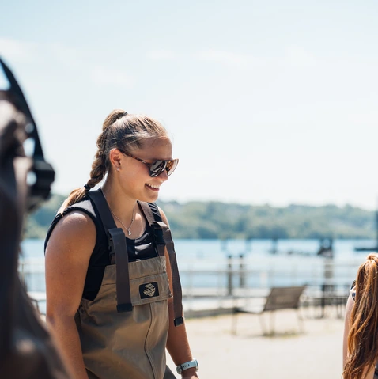
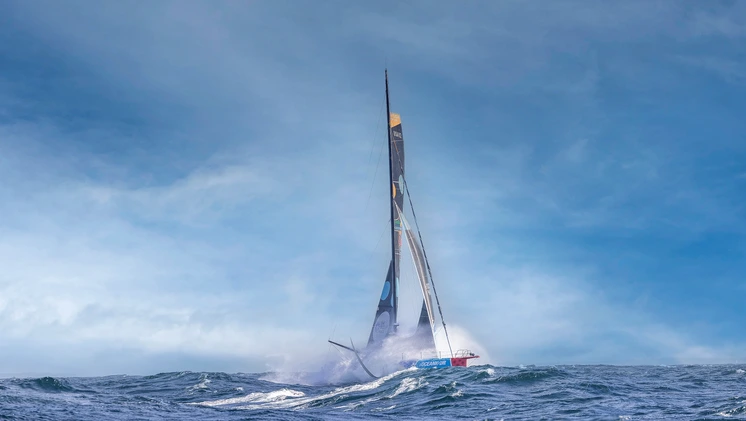
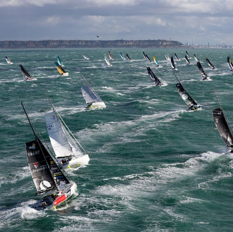
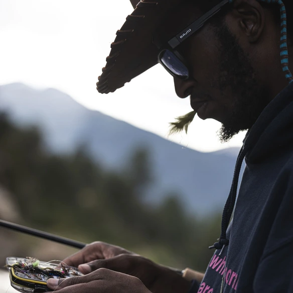
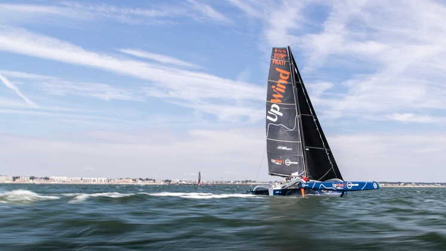
Explore our media hub for high-resolution photos available for editorial use. For usage terms and copyright information, see each individual asset.
11th Hour Racing logo available on request.
Our ambassadors are a diverse community of leaders, innovators, and advocates united by a shared commitment to a more sustainable future.
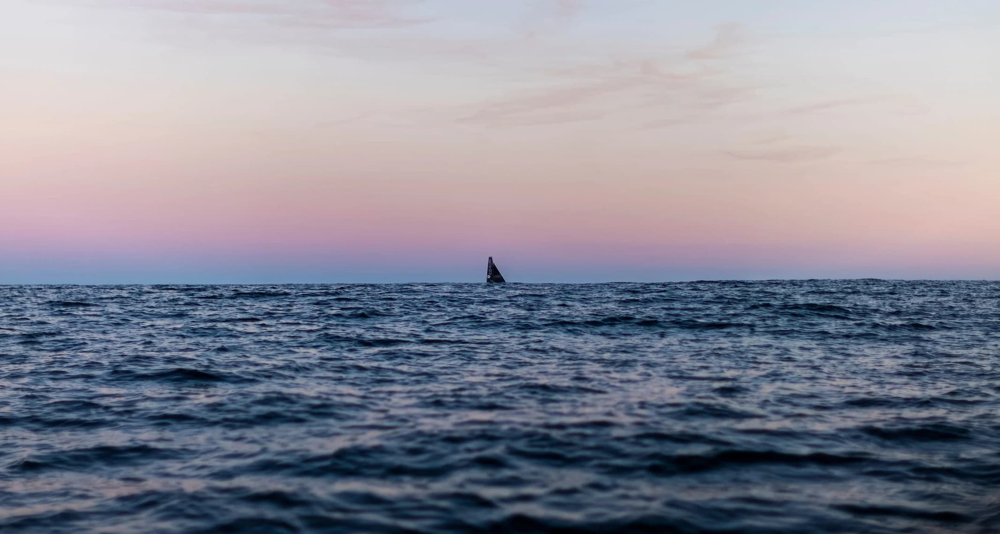
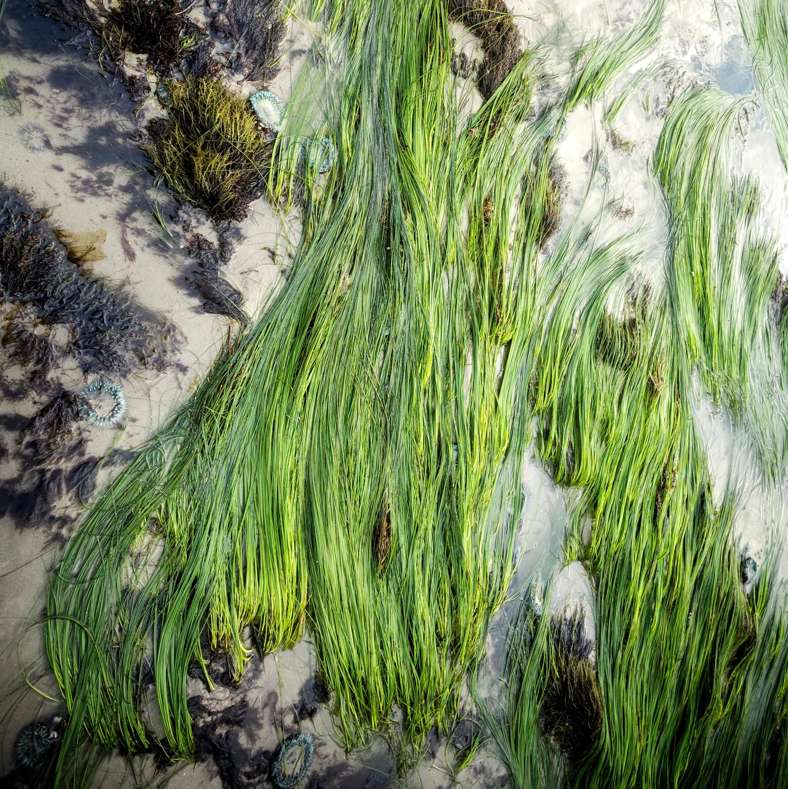
We are a brand that supports people and ideas that help make the ocean healthier. We do this through grants, sponsorships, ambassadors, and storytelling.
“11th hour” means time is running out. The name reflects the urgency to act now.
Yes and no... 11th Hour Racing is the name of the boat of a sailing team we sponsor (and have sponsored). While we sponsor sailing teams and events, our work also includes projects beyond sailing.
Sailing helps us reach people who care about the water. We work with sailors and events to reduce their impact and share ways others can help.
We support projects that teach people about the ocean, restore coastal habitats, reduce waste, and make sailing and the marine industry more sustainable.
We are part of the philanthropic organizations and initiatives created and funded by Eric and Wendy Schmidt.
If your organization’s work aligns with our goals, you may be eligible for a grant or sponsorship. You can reach out to info@11thhourracing.org to enquire.
We look for people who care about ocean health and have projects that inspire others. When we see a good fit, we reach out to explore working together.
Yes, we work globally.
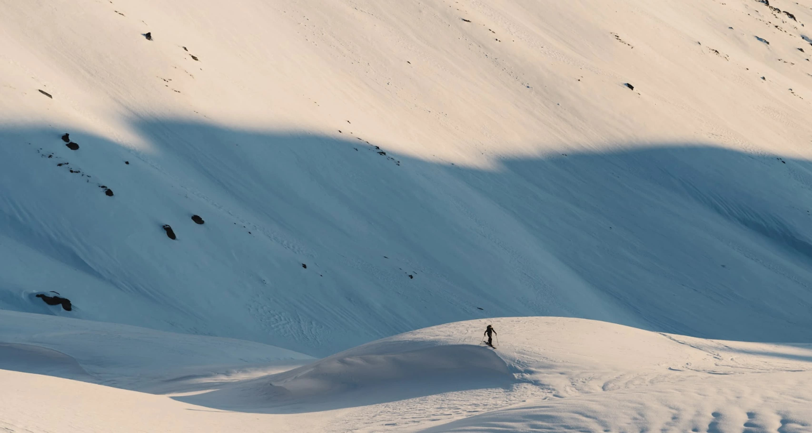